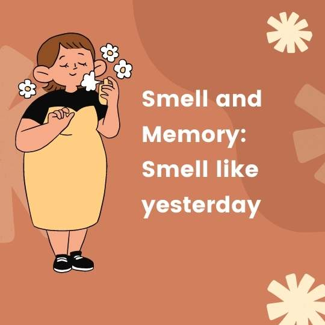

Smell and Memory: Smell like yesterday
Why does the scent of a fragrance or the mustiness of an old trunk trigger such powerful memories of childhood? New research has the answer, writes Alexandra Witze.
A. You probably pay more attention to a newspaper with your eyes than with your nose. But lift the paper to your nostrils and inhale. The smell of newsprint might carry you back to your childhood, when your parents perused the paper on Sunday mornings. Or maybe some other smell takes you back-the scent of your mother’s perfume, the pungency of a driftwood campfire. Specific odours can spark a flood of reminiscences.
Psychologists call it the “Proustian phenomeno” after French novelist Marcel Proust. Near the beginning of the masterpiece In Search of Lost Time, Proust’s narrator dunks a madeleine cookie into a cup of tea and the scent and taste unleash a torrent of childhood memories for 3000 pages.
B. Now, this phenomenon is getting the scientific treatment. Neuroscientists Rachel Herz, a cognitive neuroscientist at Brown University in Providence, Rhode Island, have discovered, for instance, how sensory memories are shared across the brain, with different brain regions remembering the sights, smells, tastes and sounds of a particular experience. Meanwhile, psychologists have demonstrated that memories triggered by smells can be more emotional, as well as more detailed, than memories not related to smells.
When you inhale, odour molecules set brain cells dancing within a region known as the imygdala ( E ) , a part of the brain that helps control emotion. In contrast, the other senses, such as taste or touch, get routed through other parts of the brain before reaching the amygdala. The direct link between odours and the amygdala may help explain the emotional potency of smells. ’’There is this unique connection between the sense of smell and the part of the brain that processes emotion,” says Rachel Herz.
C. But the links don’t stop there. Like an octopus reaching its tentacles outward, the memory of smells affects other brain regions as well. In recent experiments, neuroscientists at University College London (UCL) asked 15 volunteers to look at pictures while smelling unrelated odours. For instance, the subjects might see a photo of a duck paired with the scent of a rose, and then be asked to create a story linking the two.
Brain scans taken at the time revealed that the volunteers’ brains were particularly active in a region known as the factory cortex, which is known to be involved in processing smells. Five minutes later, the volunteers were shown the duck photo again, but without the rose smell. And in their brains, the olfactory cortex lit up again, the scientists reported recently. The fact that the olfactory cortex became active in the absence of the odour suggests that people’s sensory memory of events is spread across different brain regions.
Imagine going on a seaside holiday, says UCL team leader, Jay Gottfried. The sight of the waves becomes stored in one area, whereas the crash of the surf goes elsewhere, and the smell of seaweed in yet another place. There could be advantageous to having memories spread around the brain. ’’You can reawaken that memory from any one of the sensory triggers,” says Gottfried. “Maybe the smell of the sun lotion, or a particular sound from that day, or the sight of a rock formation.” Or – in the case of an early hunter and gatherer (out on a plain – the sight of a lion might be enough to trigger the urge to flee, rather than having to wait for the sound of its roar and the stench of its hide to kick in as well.
D. Remembered smells may also carry extra emotional baggage, says Herz. Her research suggests that memories triggered by odours are more emotional than memories triggered by other cues. In one recent study, Herz recruited five volunteers who had vivid memories associated with a particular perfume, such as opium for Women and Juniper Breeze from Bath and Body Works.
She took images of the volunteers’ brains as they sniffed that perfume and an unrelated perfume without knowing which was which. (They were also shown photos of each perfume bottle.) Smelling the specified perfume activated the volunteers brains the most, particularly in the amygdala, and in a region called the hippocampus which helps in memory formation. Herz published the work earlier this year in the journal Neuropsychologia.
E. But she couldn’t be sure that the other senses wouldn’t also elicit a strong response. So in another study Herz compared smells with sounds and pictures. She had 70 people describe an emotional memory involving three items – popcorn, fresh-cut grass and a campfire. Then they compared the items through sights, sounds and smells. For instance, the person might see a picture of a lawnmower, then sniff the scent of grass and finally listen to the lawnmower’s sound. Memories triggered by smell were more evocative than memories triggered by either sights or sounds.
F. Odour-evoked memories may be not only more emotional, but more detailed as well. Working with colleague John Downes, psychologist Simon Chu of the University of Liverpool started researching odour and memory partly because of his grandmother’s stories about Chinese culture. As generations gathered to share oral histories, they would pass a small pot of spice or incense around; later, when they wanted to remember the story in as much detail as possible, they would pass the same smell around again.
”It’s kind of fits with a lot of anecdotal evidence on how smells can be really good reminders of past experiences,” Chu says. And scientific research seems to bear out the anecdotes. In one experiment, Chu and Downes asked 42 volunteers to tell a life story, then tested to see whether odours such as coffee and cinnamon could help them remember more detail in the story. They could.
G. Despite such studies, not everyone is convinced that Proust can be scientifically analysed. In the June issue of Chemical Senses, Chu and Downes exchanged critiques with renowned perfumer and chemist J. Stephan Jellinek. Jellinek chided the Liverpool researchers for, among other things, presenting the smells and asking the volunteers to think of memories, rather than seeing what memories were spontaneously evoked by the odours. But there’s only so much science can do to test a phenomenon that’s inherently different for each person, Chu says.
Meanwhile, Jellinek has also been collecting anecdotal accounts of Proustian experiences, hoping to find some common links between the experiences. “I think there is a case to be made that surprise may be a major aspect of the Proust phenomenon,” he says. “That’s why people are so struck by these memories.” No one knows whether Proust ever experienced such a transcendental moment. But his notions of memory, written as fiction nearly a century ago, continue to inspire scientists of today.
Questions 1-5
Use the information in the passage to match the people (listed A-C) with opinions or deeds below.
Write the appropriate letters A-C in boxes 1-5 on your answer sheet.
NB: you may use any letter more than once
A Rachel Herz
B Simon Chu
C Jay Gottfried
1 Found pattern of different sensory memories stored in various zones of a brain.
2 Smell brings detailed event under a smell of certain substance.
3 Connection of smell and certain zones of brain is different with that of other senses.
4 Diverse locations of stored information help US keep away the hazard.
5 There is no necessary correlation between smell and processing zone of brain.
Questions 6-9
Choose the correct letter, A, B, c or D.
Write your answers in boxes 6-9 on your answer sheet.
6. In paragraph B, what do the experiments conducted by Herz and other scientists show?
A Women are more easily addicted to opium medicine
B Smell is superior to other senses in connection to the brain
C Smell is more important than other senses
D certain part of brain relates the emotion to the sense of smell
7. What does the second experiment conducted by Herz suggest?
A Result directly conflicts with the first one
B Result of her first experiment is correct
C Sights and sounds trigger memories at an equal level
D Lawnmower is a perfect example in the experiment
8. What is the outcome of experiment conducted by Chu and Downes?
A smell is the only functional under Chinese tradition
B half of volunteers told detailed stories
C smells of certain odours assist story tellers
D odours of cinnamon is stronger than that of coffee
9. What is the comment of Jellinek to Chu and Downers in the issue of Chemical Senses’.
A Jellinek accused their experiment of being unscientific
B Jellinek thought Liverpool is not a suitable place for experiment
C Jellinek suggested that there was no further clue of what specific memories aroused
D Jellinek stated that experiment could be remediedoffee
Questions 11-13
Complete the following summary of the paragraphs of Reading Passage, using no more than three words from the Reading Passage for each answer.
Write your answers in boxes 11-13 on your answer sheet.
In the experiments conducted by UCL, participants were asked to look at a picture with a scent of a flower, then in the next stage, everyone would have to 10 for a connection. A method called 11 suggested that specific area of brain named 12 were quite active. Then in an another parallelled experiment about Chinese elders, storytellers could recall detailed anecdotes when smelling a bowl of 13 or incense around.
---End of the Test---
Please Submit to view your score, solution and explanations.